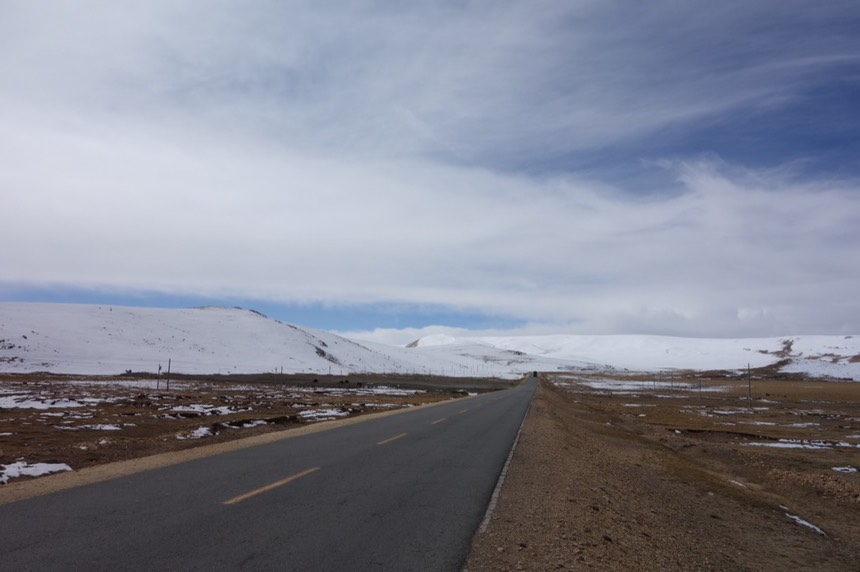
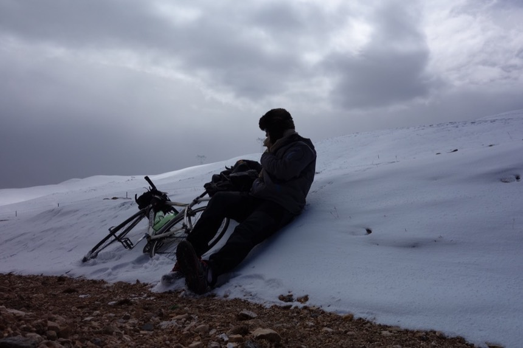
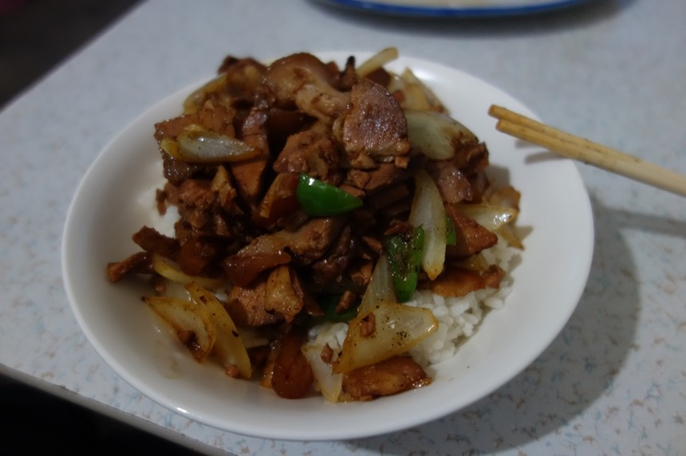

10/30 Day 10 那曲
夜裡很擔心弟弟會不會打瞌睡，但我實在好累，撐到了2點開始打起嗑睡。
清晨三點哥哥就醒了，才睡三個小時而已，問他怎麼不多睡一下？
他說睡太多頭會痛。換他跟弟弟聊天，換我去後面躺著睡吧。
哥哥人真的很好，而我的意識也開始薄弱了，不支倒地的躺下。

清晨五點二十分，我躺在搖晃的卡車上時，聽到兩兄弟興奮的交談聲而轉醒。
此時正在翻閱唐古拉山，海拔5200多公尺，旅行正式（默默的、偷偷的）進入西藏。
由於我不在馬路上，所以並不清楚這一路上有沒有檢查哨，至少卡車一路開都沒有停下來受檢。
而入藏証這種東西，是進入西藏之前才需要擔心的，我現在已經進入西藏了，所以心中大石頭又放下了一半。
另外一半的石頭，是進入西藏後，能不能搭著火車離開？
在海拔5000公尺以上的環境，兄弟倆為了保持清醒會在車內抽煙。煙霧彌漫，即使他們會打開一點車窗透氣也無效。
我第一次有喘不過氣的感覺...覺得自己好像有種會因為缺氧而死在卡車上的預感。
唯二可以呼吸新鮮空氣的時候，就是停車尿尿的時刻。以及在加油站加油時。
可以下車活動筋骨的時候，我都會爬上後車斗，看看小喵號還好不好？
雖然哥哥一直說沒事的，單車不會掉下去，但我還是擔心。（卡車載運的是水泥，質地挺軟，所以小喵號不太會因為碰撞而掉落）
七點半左右，天逐漸亮，一眼望去仍是雪白一片。
現在沒下雪，但前幾天下過，路面的積雪仍在，而天空仍是白茫茫的。
前幾天蔚藍的好天氣那去了？
路上經過一些過磅站，但並沒有特別的公安檢查站（像是離開格爾木30公里遠的那個）
加油錢跟過路費（？）都是付現金，所以兩兄弟身上都帶著大量的紙鈔，
我拿300元給哥哥當車資，乍聽之下好像很多錢，其實根本就完全只是一點零頭而已。
從被哥哥載上車至今，都沒有開口問過對方的名字，也沒有講自己的名字，但還是可以天南地北的聊天。
得知哥哥的名字，是因為車內的窗戶結霜了，我看哥哥拿著卡片在刮霜，刮完後我就借來刮我這邊的霜（看後照鏡需要）
刮完後才發現那張卡片是身份証（硬塑膠做的），上面印了哥哥的名字“仁慶多杰”
藉機也問了一下弟弟的名字“斯曲多杰”，而且藏族的名字是可以簡稱的，比如哥哥就簡稱“仁多”。弟弟就是“斯多”
八點到達安多，另一個我旅行計劃中會停留一晚的食宿地點。
在一路上經過的這些地方，看到數量如此龐大的卡車，不禁想著這些食宿點都是為了服務卡車司機而存在著的。
整條青藏公路為了運送物資而顯得非常重要，路上跑滿了各式各樣的大卡車，單車騎士在這條路上只是個渺小的點綴。
在路上聽到背後有卡車的聲音，我都會靠邊一點騎，然後大卡車都會非常客氣地繞過我（整輛都開到對向車道了）
我也會揮手致意，不論對方有沒有看到，都是一個心意。
這麼多的卡車～只是一個小小的安多而已，非常驚人對吧？
抵達的時間還早，天色已亮，但店家的鐵門全都是拉下的。
從停放的車輛推算，應該有不少卡車司機在這邊過夜，像兄弟倆這樣不休息連夜開車的應該也算是少數。
本來想在安多下車，花三～五天騎到拉薩，但天公不做美，氣象預報說接下來的路，除了終點拉薩之外都在下雪。
在安多的藏民餐廳（也是認識的，到的時間早了，也可以硬把還在睡覺的人吵起來XD）吃早飯。

不虧是到了西藏～終於燃料不是煤炭，而是我期待已久的牛糞～
沒看過看到大便還這麼興奮的人，看著大便燃燒起來時，心裡不禁感到佩服起來。
牛糞真的能燒呀...窩在暖爐邊取暖，心裡有種平靜的感覺。
因為沒有過夜休息的時候（一直重複），所以在餐廳吃飯就是刷牙洗臉的時間點，我也加入刷牙的行列。
相較我的短頭髮，弟弟的鳥巢頭真是太炸裂了，也是這時候才發現原來他在留長髮。
吃酥油茶和糌粑當早餐，酥油茶昨晚已經領較過。
不要抱持先入為主的成見，它就是奶茶，而且是牛奶不是奇怪的奶。
味道獨特在於茶葉，有種飲料是酥油茶不要加牛奶，這茶葉味道微甘甜而濃郁。
至於糌粑，我吃的版本是，青稞加熱磨成粉 + 牛油 + 酥油茶，用湯匙攪和攪和後吃下。
加進糌粑的酥油茶，就是我們在喝的酥油茶，不知道這是不是正統的吃法？
另外我以為吃糌粑要用手搓成一球一球的吃，其實用湯匙也是可以的。
哥哥看我攪拌的技術太爛，為了怕我沒能正確的品嘗這傳統的食物，所以幫忙攪拌。

完成品長這樣。
基本上很像是麵茶，但味道比較淡，青稞粉味道微甜。咬起來還有一種顆粒感。
若能接受酥油茶的味道，那吃糌粑不是問題。
雖然我吃的比較慢，但還是吃光光了。這次的大胃王比賽，終於敬陪末座變成最後一名。
吃光光的這個表現，或得倆兄弟的讚許，他們說老家納木錯的觀光客，都不吃糌粑的（也不喝酥油茶）
這頓早餐換我請，沒多少錢（還買了一包菸一起算錢）
其實我很討厭這包香菸，因為整個晚上都在車內聞這牌子菸的臭味。
吃完早餐繼續出發，依照兄弟倆的說法，中午到達那曲，晚上到達當雄，深夜或是清晨抵達拉薩。
在卡車上看著天氣預報，所有地方都在下雪，每個要經過的地方都在比冷。
拉薩除外，完全至身事外，溫暖又不下雪。
看著車窗外白茫茫的天空，蔚藍天那去了？
陸續又經過了一些檢查站，但沒有公安嚴格盤查，也許是對卡車司機的方便，如果是自駕車就沒這麼容易過關。
出發約一小時車程，看到有人騎著自行車反方向經過。
內心有點羨慕，他在單車踏版上，而我在卡車內。
太陽突然出現在天空，哥哥停車在路邊，下車把帆布綁牢，我看著外面，發呆。
哥哥上車時，我說「我就在這下車吧」
「嗯？要上廁所？」
「不是，我就在這邊下車，接下來的路用騎車的。」
因為開夜車，所以此時正在睡覺補眠的弟弟也醒了過來。
弟弟說“這邊到那曲，中間的路什麼都沒有，不如到那曲再下吧？”
心意已決，哥哥很懂，沒多挽留，就爬上了貨車，替我將凍成冰棒的小喵號傳下來。
三人合照了一張照片
謝謝你們載我進入西藏，翻越唐古拉山，我不知道在這邊下車的決定是好還是蠢，但真的很想騎一段路。
在路邊重新把包包掛回小喵號上，最麻煩的就是大背包，要用到束帶。
前變速器依然凍住卡死，但卡住的齒輪從悲劇的最大盤，變成可攻可守，可爬坡可加速的中間齒盤。
還好後變速依然是好的，不然連騎車都很困難了。（單速車）
包包掛完之後，發現長指手套和一雙襪子放在卡車上沒拿...
真要命！零下的溫度，風雪交加，帶短指手套會死人吧～
無奈發現時已經是半小時後，他們不知道開到那了。
靈機一動用工作手套+短指手套一起戴 雖然保暖性差很多 但沒別的法子了
重新跨上小喵號的感覺真好，在卡車上不輪坐還是躺，都讓我全身僵硬，在小喵號上就能活動筋骨。
在卡車內一直不停的被菸味搞的很難受，到後來即使他們沒抽煙，但車內總是瀰漫著菸味。
在海拔5000公尺以上，肺渴望著氧氣，但吸到的只有刺鼻二手菸。
在小喵號上，每一口都是新鮮冷冽的空氣～

今天有兩個問題
1. 能喝的水只有不到500 cc 要撐一整天。
兩瓶保特瓶的水凍成冰柱，沒有要融化的意思。
2. 昨天的睡眠品質極差！我懷疑實際睡著的時間有沒有超過30分鐘。
太陽雖然露臉，但山頭上依然白茫一片。
“不要質疑氣象報告”是我今天的心得，說會下雪，肯定就是會下雪，不要被現在的晴天給騙了。
除了一開始很開心之外，馬上就先遭遇一場小風雪，幸好沒有造成路面積水，否則小喵又要結凍了。
接著是一場和昨天一樣大的風雪，前方一片白茫茫。
能見度很差，唯一不一樣的是路面尚未積雪結冰，所以騎起來安全的多，頭壓的低抵的，用圍巾把臉給包住。
雖然沒有人停車問我需不需要幫忙。
但我一直小聲念著“我可以的，我可以的，我可以的，我可以的”
慢慢雪勢緩和，但風勢依舊強大。
但無論什麼時刻，太陽都在。
我透過地上的影子知道太陽在照看著我。心裡又多了幾分勇氣。

工作手套+短指手套看起來好像有點用處，實際上根本沒有用，整隻手都結凍了（手指跟手指是黏在一起的），手也凍傷了一點。
心裡想著，會停的，一定會停的，然後風雪就停了，我整個人凍的跟冰棒一樣。
一點移動的動作就可以抖落身上的霜雪。
口渴的要命時（500 cc的水一下就喝完了），只能盯著結冰的水壺嘆氣，怎麼不融化呢？
因為現在氣溫是零下呀傻瓜～
這水壺的照片是還在卡車時拍的，但根本沒差，因為一直都是保持結冰的狀態，無法飲用。
最辛苦的路段在出發的前30公里（經歷了兩場風雪），之後只是努力把里程踩到100公里，抵達那曲。
乘著順風還不太困難，但口好渴，全身都好冷，不停顫抖。
臉其實也凍傷了～哈哈，沒有被包覆到的部分，這次通通帶著情況不一的凍傷作為紀念。
圍巾雖然上面都是結霜，但沒有圍巾就沒有包覆臉的裝備，所以還是得繼續使用。
積雪上都是小小的腳印，就是那些可愛的不知道什麼鼠散步過的痕跡。
今天從一下卡車，我就一直反覆問自己。
當時是保持沉默，這麼坐著車一路到拉薩，這個決定好？
還是開口說自己要在半路下車，自己往前騎，這個決定好？

開心的時候，當然是覺得下車好～空氣多新鮮呀～風景多美麗呀～踩在單車上多爽呀～還可以一直喵喵喵的叫
身處風雪中時有點猶豫，因為實在太受凍了，覺得自己生命的火焰要被吹熄一般。
昨天睡眠不足加上飲水短缺，讓今天的騎車顯得更加吃力，但慢慢的騎還是有在前進，離今天的目的地剩下37公里了。
下午六點抵達那曲，比我想像的要殘破和小的多（這邊可是青藏鐵路會停的大城市）。
事實證明我只是騎到那曲的邊陲就自以為騎到了市中心，根本傻瓜。
繁華的地方還要再往前騎一段路，這邊雖然跟荒郊野外比算是很熱鬧，但並不是市中心。
找了騎者之家住宿 一“床”50 雖然貴（超貴！），但環境還不錯，有電熱毯可以睡個好覺。
刷牙的時候，牙膏已經凍到幾乎擠不出了～哈
房間看起來挺舒適，但是一床的價錢要50元還是讓我覺得貴的很離譜，而且這還是對單車騎行者的優惠價。
附帶一提，那曲不虧是大地方，要求比較多，這邊本來是不讓台灣人住的（有公安的告示紙張貼，只能去指定的6間賓館入住）
晚餐在老闆娘推薦的餐廳吃滷肉（不錯吃）、白飯（是冰冷的，而且一碗飯居然要價5元！）、雞蛋湯（蛋呢？）

因為飯是冷的，但剛炒起來的滷肉是熱的，我就把整盤肉直接拌在飯上面吃。

就如照片所呈現的～真他媽好吃！！！
至於雞蛋湯，我只能安慰自己是因為高海拔，所以水的沸點低，雞蛋沒辦法凝固。
以至於整碗湯可以說沒有蛋花，而且一碗白飯就要5元，這個沒什麼蛋的雞蛋湯也是5元，頓時讓我覺得很划算。
晚上好冷，室內也好冷，室外在下大風雪（窗戶會砰砰響的那種）
明天若天候或路況不佳，就搭車到拉薩吧，躺在床上時心裡這麼想。
又要跟老天爺賭了。
快要睡著的時候突然想到，如果我在卡車上，那曲只是中午會吃飯停留的地方，而現在已經幾乎快到拉薩了。
希望兄弟倆一路平安，謝謝你們。我不後悔選擇在半路下車，這是我的答案。
今日花費
40 早餐三人份 酥油茶、糌粑、一包菸
24 晚餐 滷肉炒洋蔥、青椒 半斤
5 白飯 一碗居然五元 根本明搶 還是冰的
5 雞蛋湯但幾乎沒有蛋
50 住宿三人房的一床 有wifi 但不能用
----
124
今日騎乘
騎乘時間 06：39：14
距離 102.4km
平均速度 15.4km
路線圖 (Google Map 連結)